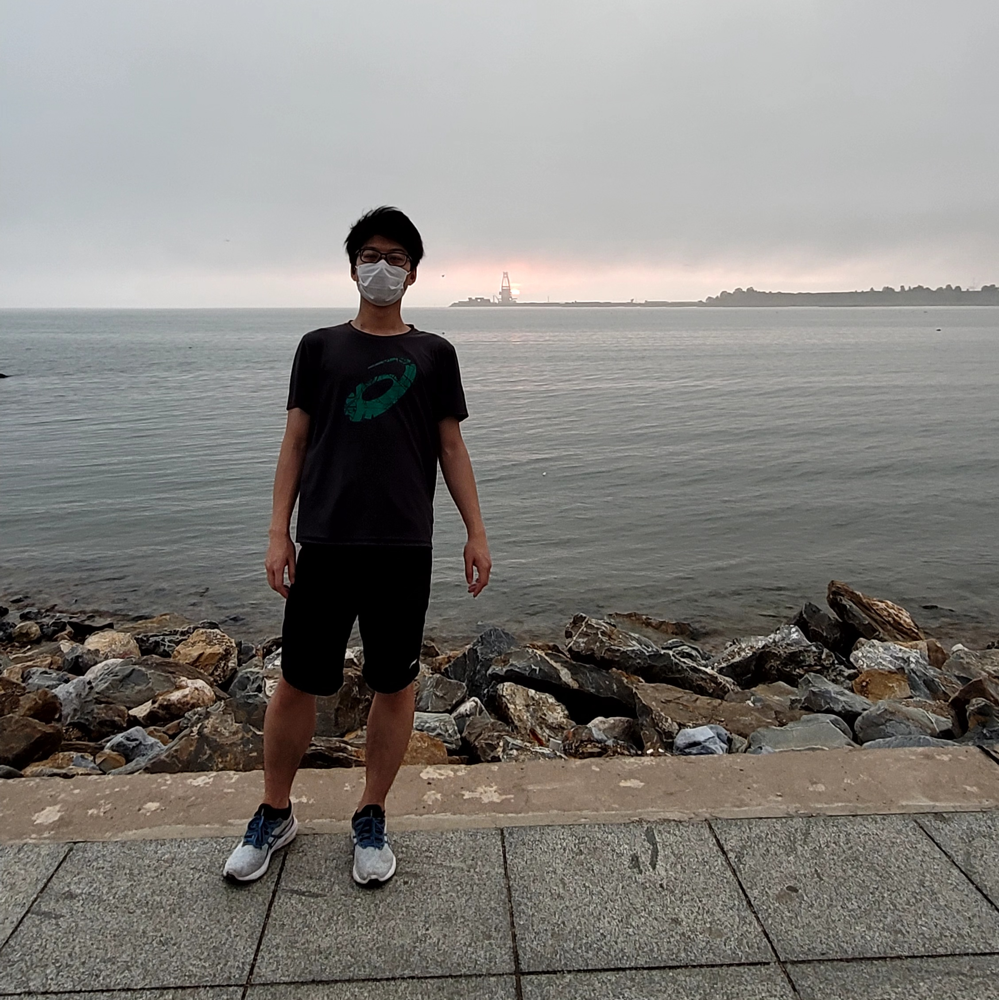

Home
Welcome to PL Lee's Personal Blog!

Hi here!
This is an alpha version of my blog. Just a POC(proof-of-concept), and maybe I'll develop a better one later.
I've reproduced a list of recent posts here for your reading pleasure:
Posts
- 2022-08-20-Haar Measure - August 20, 2022
- The Very Beginning - August 17, 2022
…or you can find more in the archives.